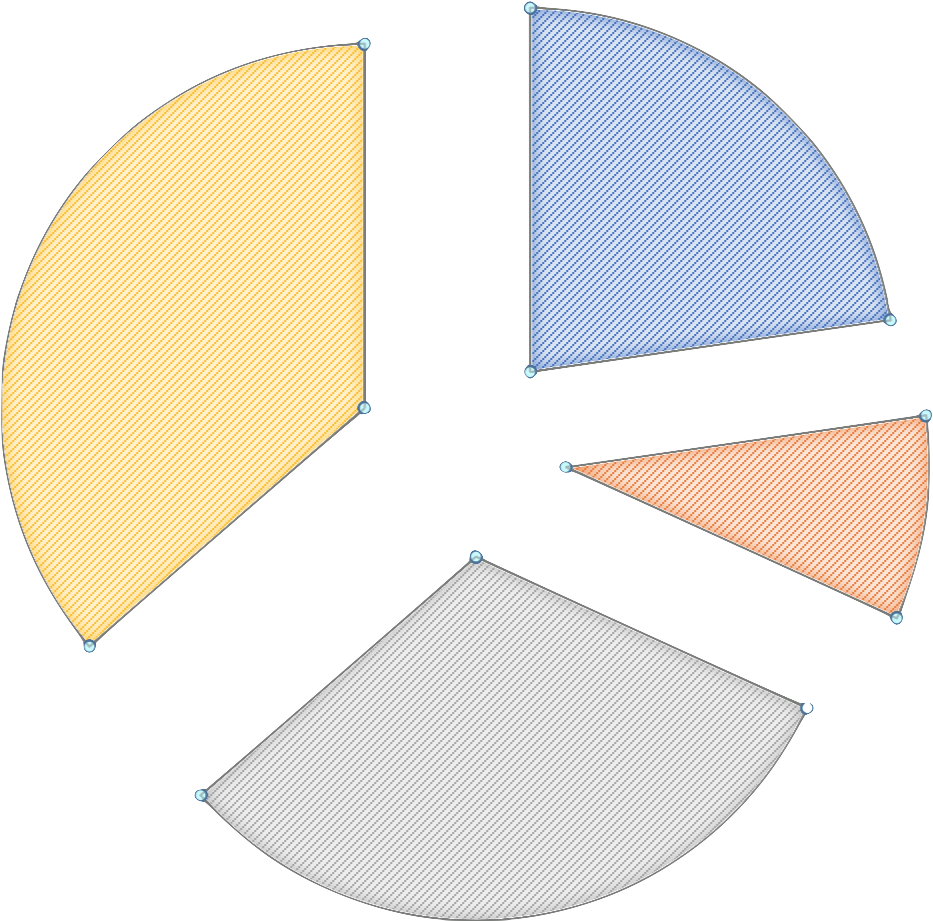

why black labour is a worldwide issue ?
we present, discuss and find solution with our interactive website.
What is taxes?
Taxes are monetary contributions that citizens pay to the government. They are an important source of income to cover public expenses (Store Norske Leksikon, 2014). These expenses are for example public health care, free education, social welfare and care for the elderly. These are services that are part of the (Norwegian) welfare system, and each year they cost the public great amounts of money. Therefore it is essential that everyone contributes and pay their share (Skatteetaten, 2017). The tax principle is based on everyone paying according to their ability and receiving benefits by their needs. Those with a high income, which determines ability, pay more than those with a lower income.
The Challenge
This fall there was a government election in Norway. As a part of the election campaigns several discussions about taxes arose. Where some parties and politicians want to cut taxes, others want to increase them. A few weeks later, the national budget was presented to the public. The national budget is an estimate of country’s predicted income and expenses for the coming year, and also determines how the government wants to spend future income and how they plan to prioritize between predicted expenses (Thomassen & Stoltz, 2017). In 2014 there were estimations that about 150 billion NOK were not paid in taxes as a result of a black labor market valued to 420 billion NOK, which was 14 % of the gross national product (Vestreng, 2014). These are unpaid contributions that could be valuable to public goods and services. Furthermore, workers that don’t pay taxes don’t have the same security and rights, if any, as those who do. This includes, among other things, the right to retirement money, sick leave and minimum wage. We see this as a challenge because our general impression is that there is a lot of complaining about taxes, while we believe very few would be happy if we had to pay to put our children through school or every time we needed to see the doctor. Furthermore, there seems to be little awareness of the consequences of black labor, both for the individual worker and for the society as a whole (Steen, 2016).
Our solution
Our goal is to create a better understanding of the concept of taxes, why we pay them and how the money is distributed. By visualizing how our tax money is spent, we believe that it will be easier for people to make informed choices, for example as for what they want to vote for in elections. One way we aim to do this is by giving a graphic presentation of the national budget, and to show how different parties aim to allocate the government’s income between different posts.